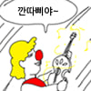

둘리가 기생충밈으로 쓰인걸 본 작가분의 반응
댓글
근데 진짜 애기 땐 둘리편이긴 했음...
나이들다보니 고길동에 감정이입 된 거지ㅠㅋㅋㅋ

막짤 폭력적이네 ㅋㅋㅋㅋㅋㅋ
사실 호잇하면 다돼서 개사기인데

걍 싹퉁없는 도라에몽이긴함
뭐? 뭐가 없어?
도우너 어서오고
수정센세께서는 갓길동이 감당할수 있는 시련만 주셨다 이마리야
솔직히 둘 중 고르라면 기생충 데리고 시는 게 낫지
집주인 리스펙하고, 식량 조금먹고 조용히 사는데
아잇시팔호잇좌를 기생충에 비비면 원작자가 슬픈만 하다
뭐냐 왜 웃으니까 도우너랑 똑같음?? 자캐였음?
심지어 야구장도 무너뜨림 ㅋㅋㅋ
나이 40줄 되니 갓길동이 측은하기도 하고
애 길러보니 둘리의 말썽도 이해되고 글타 ㅋ
애기공룡 둘리는 보셨을라나ㅋㅋ 당연히 봤겠지?
보셨을듯
카톡에 애기공룡둘리를 역으로 패러디한 공식 둘리 이모티콘이 있는데, 원저작자인 작가분한테 내용 보여는 줬을거임
아니... 둘리만화책보면
더하면더했지 덜하진않던데요...
막짤 ㅋㅋㅋ
아니야 애들도 저러면 안되는걸 아는데 하지말라는걸 둘리가 해주니까 더 신나한거지ㅋㅋ
거 장난이라도 집을 해먹진 않아요..